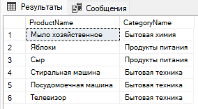

Основы SQL
Реляционные базы данных представляют собой набор таблиц,
которые могут быть связаны между собой по средствам первичных
и внешних ключей. Каждая таблица состоит из набора кортежей,
или строк. В свою очередь каждая строка состоит из столбцов. Каждый
столбец имеет тип данных, определенный при проектирование базы данных, а
так же имя, и может иметь ограничения.
Язык SQL - это структурированный язык запросов к реляционной базе данных.
Он позволяет производить выборку данных из одной или нескольких
таблиц, применять фильтры, агрегировать данные, сортировать выходные данные,
обновлять данные, удалять данные, а также создавать объекты в базе данных (
например создавать новые таблицы, представления, хранимые процедуры, пользовательские
функции, новые базы данных, индексы).
Как уже было упомянуто, каждая колонка должна иметь определенный тип данных.
Перечислим основные типы данных (полный список типов данных можно найти
на официальном
сайте Microsoft):
| Тип данных | Описание |
|---|---|
| INT | Целочисленный тип данных. Например, 1, 2, 3, ... |
| REAL | Число с плавующей точкой |
| NVARCHAR | Строковый (unicode) тип данных с переменной длинной |
| TEXT | Строковый (unicode) тип данных с переменной длинной до 2GB |
| IMAGE | Бинырный файл размером до 2GB |
| DATETIME | Дата и время (с 01.01.1753 по 31.12.9999) |
В качестве обучающего примера будем использовать простую базы данных (исходный код можно загрузить нажав эту ссылку):
USE shop;
CREATE TABLE Customers (
Id INT PRIMARY KEY IDENTITY(1,1),
FName NVARCHAR(100),
LName NVARCHAR(100),
Email NVARCHAR(100) UNIQUE,
RegisteredAt DATETIME
);
CREATE TABLE Categories (
Id INT PRIMARY KEY IDENTITY(1, 1),
Name NVARCHAR(100)
);
CREATE TABLE Products (
Id INT PRIMARY KEY IDENTITY(1,1),
ProductName NVARCHAR(100) NOT NULL,
ProductCategoryId INT NOT NULL,
Price REAL NOT NULL DEFAULT 0.0,
CONSTRAINT FK_ProductsCategories
FOREIGN KEY (ProductCategoryId) REFERENCES Categories(Id)
);
CREATE TABLE Orders (
Id INT PRIMARY KEY IDENTITY(1, 1),
CustomerId INT NOT NULL,
OrderDate DATETIME NOT NULL,
CONSTRAINT FK_OrdersCustomers
FOREIGN KEY (CustomerId) REFERENCES Customers(Id)
);
CREATE TABLE OrderedProducts (
Id INT PRIMARY KEY IDENTITY(1,1),
ProductId INT NOT NULL,
OrderId INT NOT NULL,
CONSTRAINT FK_CustomersProducts_Products
FOREIGN KEY (ProductId) REFERENCES Products(Id),
CONSTRAINT FK_OrdersProducts_Customers
FOREIGN KEY (OrderId) REFERENCES Orders(Id)
);
DECLARE @date DATETIME;
SET @date = SYSDATETIME();
INSERT INTO Customers(FName, LName, Email, RegisteredAt) VALUES(N'Иван', N'Иванов', 'ivan.ivanov@gmail.com', @date);
INSERT INTO Customers(FName, LName, Email, RegisteredAt) VALUES(N'Петр', N'Петров', 'petr.petrov@gmail.com', @date);
INSERT INTO Customers(FName, LName, Email, RegisteredAt) VALUES(N'Андрей', N'Андреев', 'andrei.andreev@gmail.com', @date);
INSERT INTO Categories(Name) VALUES(N'Бытовая химия');
INSERT INTO Categories(Name) VALUES(N'Продукты питания');
INSERT INTO Categories(Name) VALUES(N'Бытовая техника');
INSERT INTO Products(ProductName, ProductCategoryId, Price) VALUES(N'Мыло хозяйственное', (SELECT Id FROM Categories WHERE Name LIKE 'Бытовая химия'), 0.7);
INSERT INTO Products(ProductName, ProductCategoryId, Price) VALUES(N'Яблоки', (SELECT Id FROM Categories WHERE Name LIKE 'Продукты питания'), 1.1);
INSERT INTO Products(ProductName, ProductCategoryId, Price) VALUES(N'Сыр', (SELECT Id FROM Categories WHERE Name LIKE 'Продукты питания'), 7.2);
INSERT INTO Products(ProductName, ProductCategoryId, Price) VALUES(N'Стиральная машина', (SELECT Id FROM Categories WHERE Name LIKE 'Бытовая техника'), 399.99);
INSERT INTO Products(ProductName, ProductCategoryId, Price) VALUES(N'Посудомоечная машина', (SELECT Id FROM Categories WHERE Name LIKE 'Бытовая техника'), 599.99);
INSERT INTO Products(ProductName, ProductCategoryId, Price) VALUES(N'Телевизор', (SELECT Id FROM Categories WHERE Name LIKE 'Бытовая техника'), 599.99);
INSERT INTO Orders(CustomerId, OrderDate) VALUES((SELECT Id FROM Customers WHERE FName LIKE N'Иван' AND LName LIKE N'Иванов'), @date);
INSERT INTO OrderedProducts(ProductId, OrderId) VALUES((SELECT Id FROM Products WHERE ProductName LIKE N'Мыло хозяйственное'),
(SELECT o.Id FROM Orders o INNER JOIN Customers c ON o.CustomerId = c.Id WHERE c.LName LIKE N'Иванов' AND c.FNAME LIKE 'Иван' AND o.OrderDate = @date));
INSERT INTO OrderedProducts(ProductId, OrderId) VALUES((SELECT Id FROM Products WHERE ProductName LIKE N'Сыр'),
(SELECT o.Id FROM Orders o INNER JOIN Customers c ON o.CustomerId = c.Id WHERE c.LName LIKE N'Иванов' AND c.FNAME LIKE 'Иван' AND o.OrderDate = @date));
INSERT INTO OrderedProducts(ProductId, OrderId) VALUES((SELECT Id FROM Products WHERE ProductName LIKE N'Телевизор'),
(SELECT o.Id FROM Orders o INNER JOIN Customers c ON o.CustomerId = c.Id WHERE c.LName LIKE N'Иванов' AND c.FNAME LIKE 'Иван' AND o.OrderDate = @date));
Схематично данную базу данных можно представить как:

Операция SELECT используется для выборки данных из базы данных. Это одна из самых распростаненных
операций, используемых в SQL. Например, используя наш пример базы данных, мы можем выбрать все строки
слудующим образом из таблицы Products:
SELECT * FROM Products;
Результатом выполнения будет следуюшая таблица:

Если необходимо выбрать какие-то определенные колонки (например, наименование продукта), то вместо звездочки
необходимо перечислить через запятую все колонки нужной таблицы:
SELECT ProductName, Price FROM Products;
Гибкость языка SQL заключаеться в том, что можно выбирать только нужные данные, а не все.
Для этих целей существует колючевое слово WHERE. Например, если мы хотим выбрать все товары,
цена для которых меньше заданной то можно выполнить следующий запрос к базе данных:
SELECT ProductName, Price FROM Products WHERE Price < 5.0;
При использование запроса с WHERE можно составлять более сложные логические высказывания,
используя логические операторы AND, OR, NOT. Также можно делать подзапросы из других таблиц.
Все это мы рассмотрим позже, а пока продемонстрируем запрос, в котором нас интересуют
только товары в ценовом диапазоне от 1 до 5 условных единиц:
SELECT ProductName, Price FROM Products WHERE Price >= 1.0 AND Price <= 5.0;
Выбранные данные можно группировать. Это очень важно если, например, к сгруппированным данным
необходимо применить агрегирующую функцию. Например, в нашей базе данных мы можем найти сумму
товаров в каждой категории следующим образом:
SELECT c.Name, ROUND(SUM(p.Price), 2) FROM Categories AS c INNER JOIN Products AS p ON c.Id = p.ProductCategoryId GROUP BY c.Name;
Для группировки используеться ключевое слово GROUP BY, где следом идет перечисление колонок,
по котором нобходимо сгруппировать строки. Обычно используеться в паре с агрегирующей функцией.

Для фильтрации колонки, содержащей строковые данные можно использовать ключевое значение
LIKE. Например, для того, чтобы выбрать все продукты содержащие слово машина можно выполнить
следующий запрос:
SELECT p.* FROM Products p WHERE ProductName LIKE '%машина%';
В данном запросе символ % представляет один или более символов. В таблице, приведенной ниже
мы приводим список всех подстановочных символов:
| Подстановочный символ | Значение | Пример |
|---|---|---|
| % | Один или несколько символов | bl% найдет bl, black, blue, и blob |
| _ | Один символ | h_t найдет hot, hat, и hit |
| [] | Один символ в скобках | h[oa]t найдет hot и hat, но не найдет hit |
| ^ | Любой символ не в скобках | h[^oa]t не найдет hot и hat, но найдет hit |
| - | Любой символ из области | c[a-b]t найдет cat и cbt |
Выражение CASE во время отработки скипта SQL проходит по условиям и возвращает значение,
соответствующее первому совпавшему условию (также как и выражение IF-THEN-ELSE).
Как только условие сработает (будет получен результат True), выполнение выражения
завершится и вернется результат. Если ни одно из условий не выполнится, то вернется
значение заданное в операторе ELSE. Если же оператор ELSE опущен, то возвращается значение
NULL. Например:
SELECT ProductName,
CASE
WHEN (Price <= 1) THEN 'Cheap'
WHEN (Price > 1 AND Price <= 10) THEN 'Moderate'
WHEN (Price > 10) THEN 'Expensive'
ELSE 'Should never be here'
END AS 'Price category'
FROM Products
Результатом данного запроса будут следующие строки:
В SQL альясы используються для того, чтобы дать таблице или колонке временное имя.
Альяс действует только на время выполнения запроса. И очень часто используются
для того, чтобы дать легкочитабельное имя таблице. Альясы создаються с использованием
ключевого слова AS.
SELECT p.* FROM Products AS p;
Для обновления данных в таблице существует специальное ключевое слово UPDATE.
Также как и для SELECT операции, в UPDATE можно использовать WHERE для выборки только тех строк,
которые представляют интерес. Приведем пример самого простого выражения для обновления:
UPDATE Products SET Price = 1.5 WHERE Products.Id = 1;
Но также как и в SELECT в выражение WHERE можно использовать подзапросы,
например:
UPDATE Products SET Price = 1.5 WHERE Products.ProductCategoryId IN
(SELECT c.Id FROM Categories AS c WHERE c.Name LIKE 'Бытовая химия')
В SQL, представления являются особым объектом, который содержит данные, полученные запросом SELECT из обычных таблиц.
Это виртуальная таблица, к которой можно обратиться как к обычным таблицам и получить хранимые данные.
Представление в SQL может содержать в себе как данные из одной единственной таблицы, так и из нескольких таблиц.
Представления нужны для того, чтобы упростить работу с базой данных и ускорить время ответа сервера.
Так как представление — это уже результат некой выборки данных с помощью SELECT, то, очевидно, в следующий раз
вместо запроса к нескольким таблицам достаточно просто обратиться к уже созданному представлению.
CREATE OR ALTER VIEW AllProductsWithCategories
AS SELECT p.*, c.Name AS CategoryName FROM Products AS p
INNER JOIN Categories AS c ON p.ProductCategoryId = c.id;
GO
SELECT * FROM AllProductsWithCategories;
В SQL существует пять основных запросов:
- SELECT - выборка данных из таблици или представления
- UPDATE - используется для обновления данных в таблеце
- DELETE - используется для удаления записей или же объектов таких, как хранимая процедура или представление
- ALTER - используется для изменение структуры таблицы или объекта, например, хранимой процедуры
- CREATE - используется для создания таблиц, индексов, хранимых процедур, представлений, баз данных
Иногда нужно выбрать первые N строк из результата. Для этого существует ключевое слово TOP:
SELECT TOP 2 * FROM Products;
Для пагинации же иногда нужно выборать следующие N начиная с отступа M. Для этого существуют ключевые слова
OFFSET и FETCH NEXT, который являются параметрами ORDER BY. Например, если мы хотим выбрать следующие 2 продукта
начиная со 2 по списку то, можно выполнить следующий запрос:
SELECT * FROM Products
ORDER BY Id ASC
OFFSET 1 ROWS
FETCH NEXT 2 ROWS ONLY;
Результатом выборки будет следующий набор строк:

Мы уже использовали составные логические выражения при конструирование запросов
к базе данных. В данном разделе рассмотрим логические операторы AND, OR, NOT.
Но прежде чем мы приступим к рассмотрению их использования, приведем несколько
фактов из дискретной математики. А именно расмотрим таблицы истинности, основные
свойства булевой алгебры, и приоритеты операторов.
Таблица истинности для отрицания:
| A | NOT A |
|---|---|
| True | False |
| False | True |
Таблица истинности для операции AND:
| A | B | A AND B |
|---|---|---|
| True | True | True |
| True | False | False |
| False | True | False |
| False | False | False |
Таблица истинности для операции OR:
| A | B | A OR B |
|---|---|---|
| True | True | True |
| True | False | True |
| False | True | True |
| False | False | False |
Таблица истинности для операции =:
| A | B | A = B |
|---|---|---|
| True | True | True |
| True | False | False |
| False | True | False |
| False | False | True |
Основные аксиомы булевой алгебры (полный список можно найти здесь)
| Закон коммутативности | A AND B = B AND A | A OR B = B OR A |
| Закон ассоциативности | (A AND B) AND C = A AND (B AND A) | (A OR B) OR C = A OR (B OR A) |
| Закон дистрибутивности | A OR (B AND C) = (A OR B) AND (A OR C) | A AND (B OR C) = (A AND B) OR (A AND C) |
| Закон поглащения | A OR (A AND B) = A | A AND (A OR B) = A |
| Дополнительность | A OR NOT A = True | A AND NOT A = False |
При составление логических выражений очень важно иметь ввиду приоритеты операторов.
Так, некоторые операторы имеют больший приоритет и соответсвенно будут обработаны SQL
в первую очередь (заметим, что фигурными скобками можно установить нужный порядок
обработки любого логического высказывания).
| Оператор | Приоритет |
|---|---|
| Круглые скобки | 1 |
| Отрицание | 2 |
| И | 3 |
| ИЛИ | 4 |
| Эквиваленция | 5 |
Теперь, зная основные свойства булевой алгебры, мы можем составлять сложные WHERE выражения.
Например, для того,чтобы найти все товары которые находятся в категории Бытовая химия и
Продукты питания, и, для которых цена находится в ценовом диапазоне от 1 до 5 условных единиц,
мы можем выполнить следующий запрос:
SELECT p.ProductName FROM Products AS p
INNER JOIN Categories AS pc ON p.ProductCategoryId = pc.Id
WHERE pc.Name IN ('Бытовая химия', 'Продукты питания') AND
(p.Price >= 1 AND p.Price <= 5)
Агрегирующие функции применимы вместе с ключевым словом GROUP BY. Мы уже встречали ранее
запросы с группировкаой. В таблице приведенной ниже мы перечисляем некоторые агрегирующие
функции:
| Функция | Описание |
|---|---|
| COUNT | Возвращает количество строк в каждой из групп |
| SUM | Возвращает сумму всех строк в каждой из групп |
| AVG | Возвращает среднее арифметичское всех строк в каждой из групп |
| STDEV | Возвращает стандартное отклонение для всех строк в каждой из групп |
| MIN | Возврашает минимум |
| MAX | Возврашает минимум |
SELECT COUNT(Price) AS N, SUM(Price) AS Sum, AVG(Price) AS Mean, ISNULL(STDEV(Price), 0) AS 'Standard deviation' FROM
Products GROUP BY ProductCategoryId
ORDER BY COUNT(Price) DESC
INTERSECT позволяет найти пересечение в строках двух таблиц и вернуть как
результат это пересечение. Для того, чтобы INTERSECT корректно работал
необходимо, чтобы тип и количество колонок были одинаковыми для всех таблиц.
SELECT * FROM Products WHERE Id IN (
SELECT ProductId FROM OrderedProducts WHERE OrderId =
(SELECT o.Id FROM Orders o INNER JOIN Customers c ON
o.CustomerId = c.Id WHERE c.LName LIKE N'Петров' AND
c.FNAME LIKE 'Петр')
INTERSECT
SELECT ProductId FROM OrderedProducts WHERE OrderId =
(SELECT o.Id FROM Orders o INNER JOIN Customers c ON
o.CustomerId = c.Id WHERE c.LName LIKE N'Иванов' AND
c.FNAME LIKE 'Иван')
);
JOIN используется для объединения строк из двух и более таблиц, основываясь на связанных колонках
в этих таблицах. Так, например, в нашем примере таблица Products и OrderedProducts имеют связь по колонке
Id/ProductId, и соответственно можно сделать слияние двух таблиц с помошью операции JOIN.
Самый распространенный тип объединения - это INNER JOIN, который возвращает только те строки, для которых
есть общее значение колонки как в левой, так и в правой таблице. Схематично результат данного запроса
можно представить следующей диаграммой Венна:

Давайте выбирем все строки из таблиц Products и Categories используя связанные колонки для объединения:
SELECT p.ProductName, c.Name AS CategoryName
FROM Products AS p
INNER JOIN Categories AS c ON p.ProductCategoryId = c.Id

RIGHT JOIN возвратит тот же результат, что и INNER JOIN, плюс ко всему
строки из правой таблицы и NULL для значения для левой таблицы, строки которой не могут
быть сопоставленны с правой таблицей. Ниже представлен результат такого объединения
на диаграмме Венна:

SELECT * FROM OrderedProducts op
RIGHT JOIN Products p
ON op.ProductId = p.Id;
LEFT JOIN похож на RIGHT JOIN - он возвратит все строки из правой и левой таблицы,
для которых есть совпадение по полю, плюс все оставшиеся строки из левой таблицы
и NULL значения для правой таблицы (для которых не было совпадений). На диаграмме
Венна эта операция выглядит следующим образом:

И наконец, FULL JOIN возвратит объединенные результаты RIGHT и LEFT JOIN.

ANY возврашает True если логическое выражение выполняется хотя бы для одного значения:
SELECT * FROM Products p
WHERE p.Price = ANY (SELECT Price FROM (VALUES(400), (399.99), (5)) AS TempTable(Price));
ALL возврашает True если логическое выражение выполняется для всех значений:
SELECT * FROM Products p
WHERE p.Price > ALL (SELECT Price FROM (VALUES(400), (399.99), (5)) AS TempTable(Price));
Возврашает True если результат выборки содержит хотя бы одну строку:
IF EXISTS (SELECT name FROM master.sys.databases WHERE name = N'shop')
PRINT 'DATABSE EXISTS';
ELSE
PRINT 'DATABASE DOES NOT EXIST'
Для удаления данных из таблице существует специальное ключевое слово DELETE.
Также как и для SELECT и UPDATE операции, в DELETE можно использовать WHERE для удаления только тех строк,
которые представляют интерес. Приведем пример самого простого выражения для удаления данных из таблицы:
DELETE FROM OrderedProducts WHERE OrderedProducts.ProductId = 3;
DELETE FROM Products WHERE Products.Id = 3;
Если таблица связанная, и в связанной таблице есть записи, которые ссылаются
на данную таблицу, то удалить сначала в зависимых таблицах.
Также как и в SELECT в выражение WHERE можно использовать подзапросы,
например:
DELETE FROM OrderedProducts WHERE OrderedProducts.ProductId IN
(SELECT p.Id FROM Products p WHERE ProductCategoryId =
(SELECT c.Id FROM Categories AS c WHERE c.Name LIKE 'Бытовая химия'))
DELETE FROM Products WHERE Products.ProductCategoryId IN
(SELECT c.Id FROM Categories AS c WHERE c.Name LIKE 'Бытовая химия')
Когда запрос очень громоздкий рекомендуется к коду добавлять комментарии. В SQL
коментарии могут быть однострочнимы и многострочными:
-- Это однострочный коментарий
-- Данный запрос выдаст все продукты
SELECT * FROM Products -- WHERE Id = 2
А это уже многострочный комментарий:
/*
Данный запрос выдаст только
один продукт
*/
SELECT * FROM Products WHERE Id = 2
Арифметические операторы
Операторы сравнения
Логические операторы
Битовые операторы
| Оператор | Описание | ||||||
|---|---|---|---|---|---|---|---|
| + | Сложение | - | Вычитание | / | Деление | * | Умножение |
| Оператор | Описание |
|---|---|
| > | Больше |
| < | Меньше |
| >= | Больше или равно |
| <= | Меньше или равно |
| = | Равно |
| &th;> | Не равно |
| Оператор | Описание |
|---|---|
| ALL | TRUE если все значения подпадают под условие |
| ANY | TRUE если хотя бы одно значение подпадает под условие |
| AND | TRUE если оба операнда TRUE |
| BETWEEN | TRUE если операнд находится между заданными значениями |
| EXISTS | TRUE если подзапрос выдает хотя бы одно значение |
| IN | TRUE если значение операнда находится в списке |
| LIKE | TRUE если значение операнда совпадает с патерном |
| NOT | TRUE если выражение FALSE |
| OR | TRUE если хотя бы одно из условий разделенное OR TRUE |
| Оператор | Описание |
|---|---|
| & | Побитовое И |
| | | Побитовое ИЛИ |
| ^ | Побитовое исключающее ИЛИ |
Ниже мы приводим функции, которые часто встречаются на практике. Полный список функций
можно посмотреть здесь
| Функция | Описание |
|---|---|
| ISNULL | Проверяет являеться ли параметр NULL, и если да заменяет его значением переданным как параметр |
| SYSDATETIME | Возвращает текущее системное время |
| CONCAT | Объединяет две и более строк в одну |
| TRIM | Удаляет пробелы и табы в начале и конце строки переданной как параметр |
| REPLACE | Заменить в строке |
| SUBSTRING | Выбрать подстроку в строке |
| ABS | Возвращает абсолютное значение числа |
| ROUND | Округляет число до N знаков после запятой (где N передается как параметр) |
| CEIL | Возвращает целое число большее или равное тому, которое передано как параметр |
| FLOOR | Возвращает целое число меньшее или равное тому, которое передано как параметр |
| COUNT | Возврашает число строк в результатирующей таблице |
IN возврашает True если значение присутствует в наборе:
SELECT * FROM Products p
WHERE p.Price IN (399.99, 499.99, 599.99);
BETWEEN возврашает True если значение находиться в заданом диапазоне:
SELECT * FROM Products p
WHERE p.Price BETWEEN 0.1 AND 5;
UNION позволяет объединенить строки из двух таблиц и более таблиц, и вернуть
результат этого объединения как одну таблицу. Для того, чтобы UNION корректно работал
необходимо, чтобы тип и количество колонок были одинаковыми для всех таблиц.
SELECT CONCAT(FName, ' ', LName) AS Name FROM Customers WHERE LName LIKE 'Петров'
UNION
SELECT CONCAT(FName, ' ', LName) AS Name FROM Customers WHERE LName LIKE 'Андреев'
Храни́мая процедура - объект базы данных, представляющий собой набор SQL-инструкций, который компилируется один
раз и хранится на сервере. Хранимые процедуры очень похожи на обыкновенные процедуры языков высокого уровня, у
них могут быть входные и выходные параметры и локальные переменные, в них могут производиться числовые вычисления
и операции над символьными данными, результаты которых могут присваиваться переменным и параметрам. В хранимых
процедурах могут выполняться стандартные операции с базами данных. Кроме того, в хранимых
процедурах возможны циклы и ветвления, то есть в них могут использоваться инструкции управления процессом исполнения.
Хранимые процедуры похожи на определяемые пользователем функции. Основное различие заключается в том, что пользовательские
функции можно использовать как и любое другое выражение в SQL запросе, в то время как хранимые процедуры должны быть вызваны
с помощью функции CALL
CREATE OR ALTER PROCEDURE SelectAllOrdersOfACustomer
@FName NVARCHAR(100),
@LName NVARCHAR(100)
AS
BEGIN
SELECT o.Id, o.OrderDate FROM Orders AS o
INNER JOIN Customers AS c ON o.CustomerId = c.Id
WHERE c.FName = @FName AND c.LName = @LName
END
EXEC SelectAllOrdersOfACustomer @Fname = 'Петр', @Lname = 'Петров';